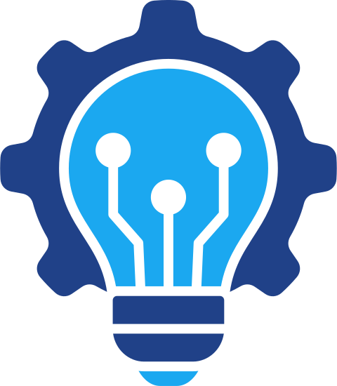
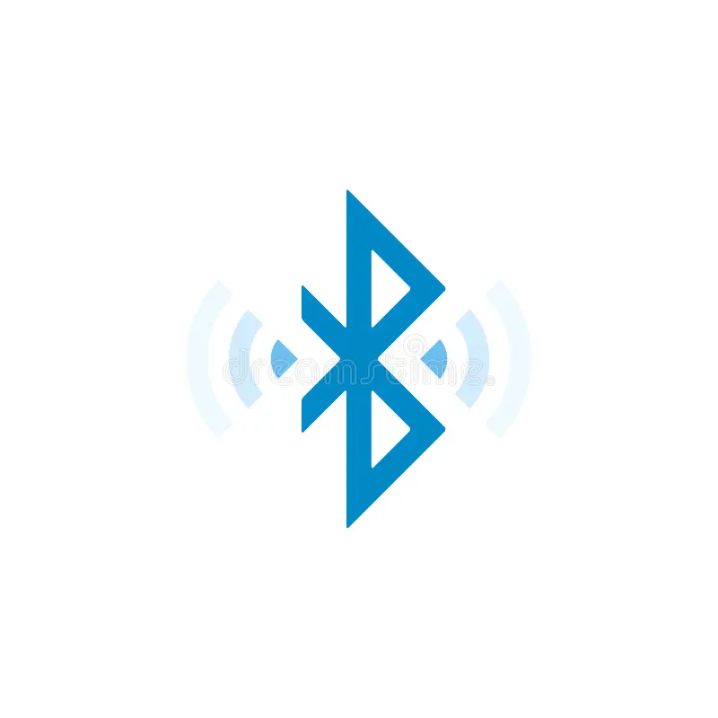
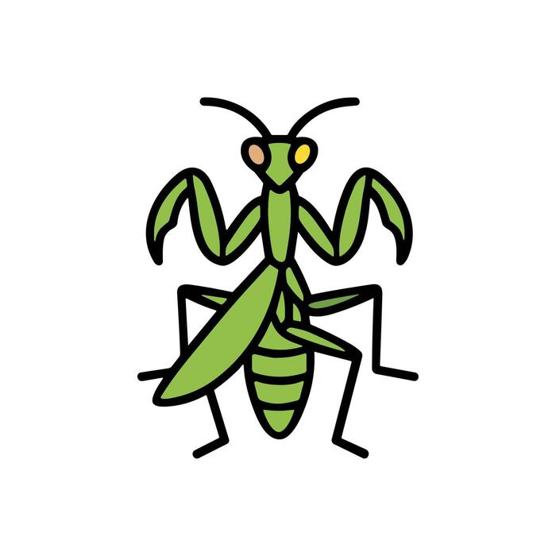
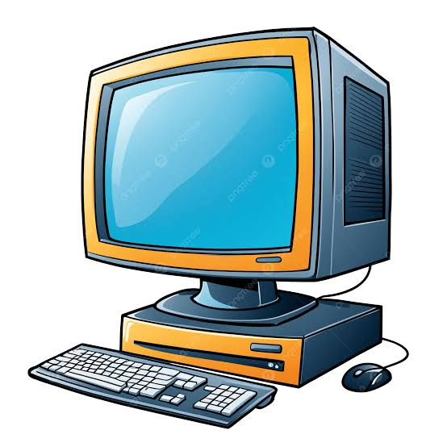

Meu primeiro post
Por: Gustavo Tivo
Boas-vindas ao meu novo blog! Aqui vou compartilhar dicas de programação e curiosidades da area de tecnologia.
Vou compartilhar conhecimentos sobre tecnologia e programação

Por: Gustavo Tivo
Boas-vindas ao meu novo blog! Aqui vou compartilhar dicas de programação e curiosidades da area de tecnologia.
Por: Gustavo Tivo
Estima-se que 90% de todos os dados existentes no mundo hoje foram gerados apenas nos ultimos dois anos. Vivemos em uma verdadeira explosão de informação que não para de acelerar.

Por: Gustavo Tivo
Antes do design ergonômico e das luzes RGB, o primeiro mouse do mundo foi construido em madeira! Criado por douglas Engelbart em 1964, ele tinha o formato de uma caixa quadradae apenas um botão.

Por: Gustavo Tivo
O nome é uma homenagem ao rei viking Harand Blatand Gormosso, que unificou tripos da escandinavia. Seu apelido era Harand "Bluetooth" porque seus dentes eram tão podres que tinham uma coloração azul escura.

Por: Gustavo Tivo
O termo "bug" (inseto) para erros de software ficou famoso em 1947, quando engenheiros encontraram uma mariposa real presa dentro do computador Harvard Mark, causando uma falha no sistema.

Por: Gustavo Tivo
Em 1991, pesquisadores da Universidade de Cambridge criaram a primeira webcam para não perderem tempo indo até a cozinha e encontro a cafeteira vazia. Eles monitoravam o nivel do café em tempo real nos seus munitores.

Por: Gustavo Tivo
Apesar de Alan Turing ser conhecido como pai da computação, ele não criou o prumeiro computador. Entre os primeiros computadores, um deles foi chamado Colossus projetado por Tommy Flowers durante a Segunda Guerra Mundial e tambem, praticamente na mesma época, o ENIAC foi projetado por J.Presper Eckert e john Mauchiy.
Embora o Colossus tenha funcionado antes como um "heroi de guerra" especializado, o ENIAC é frequentemente chamdo de "pai" por ser o primeiro programavel de uso geral.
E ai, qual voce considera como o primeiro computador?